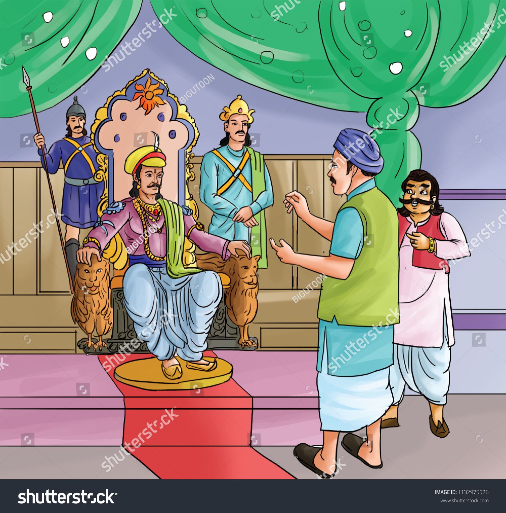

1. King Vikramaditya
In days gone by, Vikramaditya, a great king ruled over a prosperous kingdom
from his capital at Ujjain.
Mighty as the sun - he was a king with immense love for learning as well as for adventure.

Among such visitors was a mendicant who, on every visit, presented the king
with a fruit. The king accepted his humble gift with the same show of
courtesy with which he would have accepted a diamond from a rich merchant.
*___________________________1__________________________* |